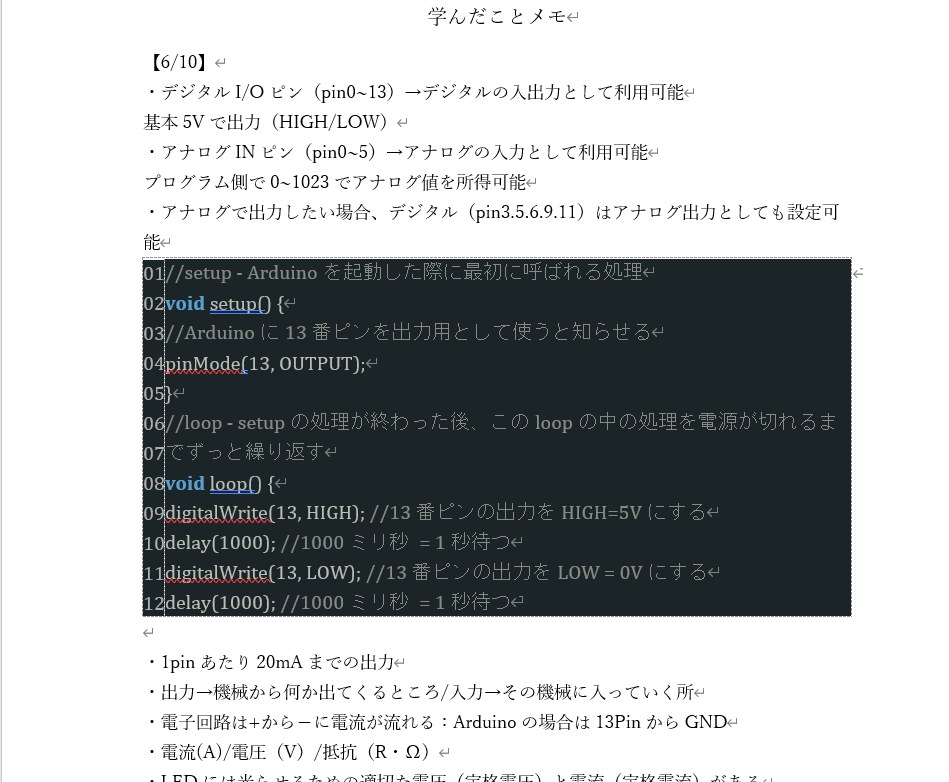
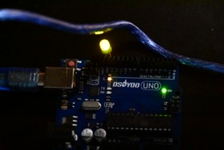
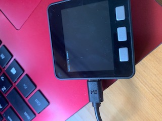

遊びながらArduinoとMESHで工作
勉強していない間とか本を読んでいない間に暇つぶししてくページ
試行錯誤
ここ1週間で今後どのようにしてIoTを学んでいくか方針を決めるため、色々試行錯誤してみました。なんで学習計画を決めるのにこんなに慎重に、そして時間をかけたのかというと、0からのスタートの人は目標が見えず迷走してしまいがちだからです。だから私は自分の理解度に合った取り組み方を最初に見つけておくのが重要だと考えました。（決めたら後は進むだけ！）そして、今後このように試行錯誤した跡を残して、誰かの参考になったらと思っている。
･･･ということで、チャレンジしたことを書いてみる
【チャレンジ1】Arduino専門サイト基礎入門から取り組んでみる
とりあえず超基本のLチカから始まり、学んだことをメモした。サイト自体わかりやすく、モノを作る実戦感覚を養うことができるがこれだけだと言語を理解するまでには至らないため、自分のオリジナルのモノは作れないし、掲載してあるパターンのモノしか作れないので内容が薄くなりそう。
参考サイトはこちら 参考動画はこちら


【チャレンジ2】ArduinoとM5Stackを同時並行してはじめてみた
前述したサイトを元に電子工作の実践を学び、M5Stackと先生から頂いた専用の本を使ってC++の言語を学ぼうとした。この本はC言語をある程度理解している人向けで私にはSETUP関数とLOOP関数の仕組みしか理解できなかった。やっぱりチャレンジ1と同様、掲載されたコードをただ打ち込むという作業になってしまった。

※とても見づらいというか、見えないですが”Hi, I'm AYANA!!”と打ち込んでいます
【チャレンジ3】C言語から理解していく
スッキリわかるC言語入門という本でとりあえずC言語の仕組みを理解していく。チャレンジ1、2のように実践から入るという方法もあったのだが、C＋＋を理解するにはある程度C言語の理解が必要だということが実践してみてわかったので私はこの本から入っていくことに決めた。あまり時間はかけたくないが、ページ数がとても多いので2週間後までに読み終わることを目標に取り組んでいく（1日50ページ）。暗記じゃなくてあくまで理解が目的なのでスラスラ読めたらなと願っている。ちょっと辛そうに感じる人もいると思うが頑張りたいことなので色々やってみたいというのが正直な気持ち。大好きな鬼滅の刃（200ページ）だと思い込み読み進めていこ～））
読み終わったらArduinoとM5Stackに戻ってくる。目標7月頭頃。